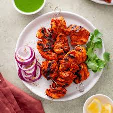

Chicken Tikka
Description
Chicken tikka is a chicken dish popular in India, Bangladesh, Pakistan and the United Kingdom.
It is traditionally small pieces of boneless chicken baked using skewers on a brazier called angeethi or over charcoal after marinating in Indian spices and dahi (yogurt).
A flavorful and tender, essentially a boneless version of tandoori chicken
Ingredients
- Chicken boneless 500 gm
- Hung curd ½ cup
- Salt to taste (1 tsp per 500gm)
- Ginger Garlic paste
- Spices
- Red Chilli Powder
- corriander powder
- Cumin powder
- Garam Masala
- Amchur powder
- Roasted gram flour
- Mustard Oil
- Bamboo skewers as required (soaked in water)
Instructions
- Slice the chicken breast in two halves cutting it horizontally and further slice the chicken breast.
(You can take any boneless part of the chicken and slice it).
- Transfer the sliced chicken breast in a mixing bowl, further add salt to taste and ginger garlic paste, marinate it for 30 minutes.
- For second marination, take a mixing bowl and add hung curd, your spices, salt to taste, ginger garlic paste and roasted besan, mix well(make sure you’ve already added salt in the first marination so add the salt accordingly.)
Add mustard oil and mix well, finally add the pre marinated chicken
- Take bamboo skewer which was already soaked in water and skew the chicken, make as many skewers as you want.(add diced vegetables if you want)
- Set a grill pan or any pan on medium heat, add oil and grill the chicken tikkas from all side until they are cooked and grill marks appears.
- You can also char them on open fire over the gas to give the burnt flavour and taste.
- Your chicken tikka is ready, you can serve it hot with some green chutney on side and some onions as well.
Home Page